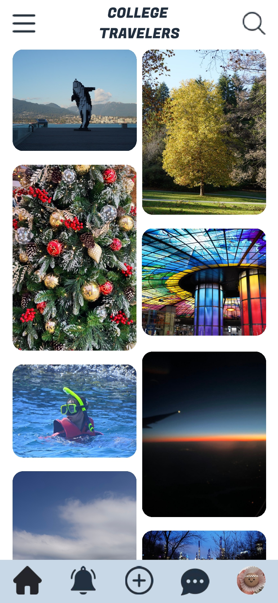
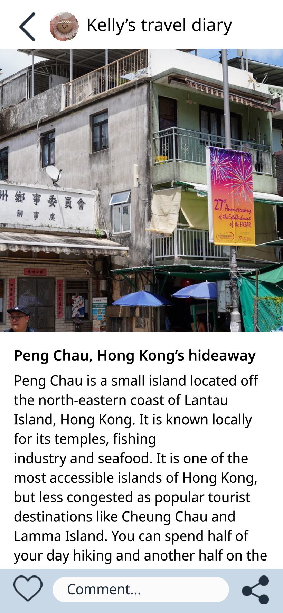

Goals
- Alternative platform for major travel sites filled with ads
Needs of the traget audience
- Minimal intervention from advertisers/ businesses
- 'What else do you have in NYC other than Times Square?' – ideas from locals to get away from tourist spots
HOW ARE WE MEETING THESE NEEDS?
Content
- Full of pictures – visually pleasing
- User-generated content
- Ad-free, only native ad on official account to cover operational/ maintenance costs
- No algorithm – users explore new places on the timeline
Design
- The Principle of Continuity – flex design
☆ inspiration: Pinterest, Red (China SNS platform)
Technology
- Goal: A platform that sustains itself to minimize operational cost
- Now: frontend – HTML/CSS/JS UI prototype
- Missing from prototype: following function, imperfect web app (responsive design) code, complete popup function, multiple images display in posts
- Next Stage:
- Polish prototype, improvement on UX & UI design
- Backend & server (eg. SQL, web services)
- When users populate:
#tagging systems (keywords for SEO)
- Goal 2: Make sure content are authentic, prevent platform from flooded with ads
- Institution email/ ID verification system (eg. UNiDAYS)

